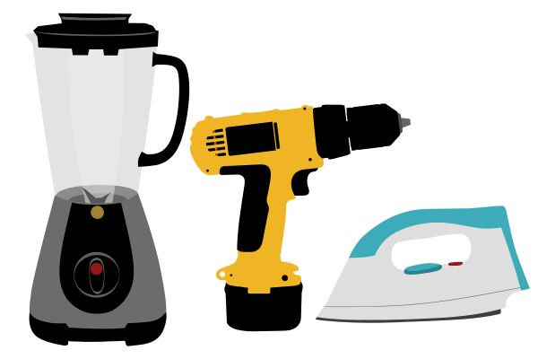
Linha Azul
Pequenos eletrodomésticos e ferramentas elétricas.
Exemplos: liquidificadores, furadeiras e batedeiras.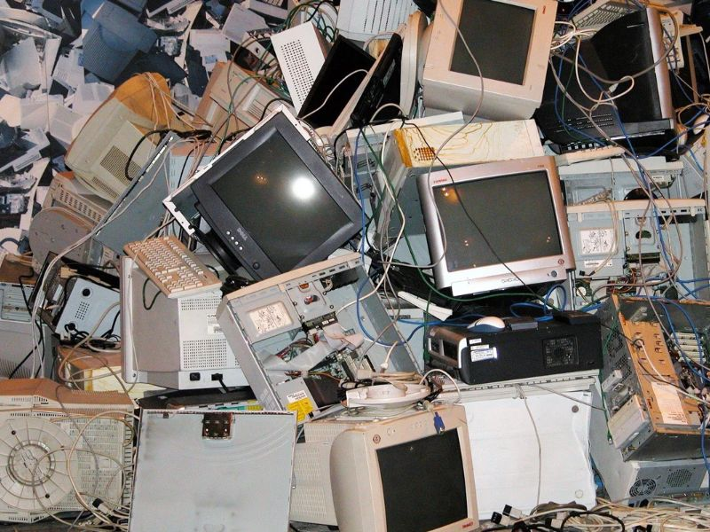
Você sabe o que acontece com os aparelhos eletrônicos quando deixam de funcionar ou já não são mais utilizados? Celulares antigos, computadores, televisores, carregadores e diversos outros equipamentos fazem parte de um tipo de resíduo que merece atenção especial: o lixo eletrônico.
O lixo eletrônico, também conhecido como e-lixo ou resíduo eletroeletrônico, corresponde a equipamentos elétricos e eletrônicos descartados por não apresentarem mais utilidade para seus proprietários, seja por estarem quebrados, ultrapassados ou simplesmente terem sido substituídos por modelos mais novos. Esses resíduos estão cada vez mais presentes no nosso cotidiano, acompanhando o crescimento do consumo de tecnologia e a rápida renovação dos aparelhos.
Diferentemente do lixo doméstico comum, esses equipamentos possuem uma composição bastante complexa. Eles podem conter materiais valiosos, como cobre, alumínio, ouro e prata, que podem ser recuperados e reaproveitados por meio de processos adequados de reciclagem. Entretanto, também podem apresentar substâncias potencialmente perigosas, como chumbo e mercúrio, que exigem cuidados durante o manuseio e a destinação.
O grande problema surge quando esses materiais são descartados de maneira inadequada, como em terrenos baldios, lixões ou junto ao lixo comum. Nessas condições, componentes tóxicos podem contaminar o solo e a água, além de representar riscos à saúde humana e aos ecossistemas.
Por isso, compreender o que é lixo eletrônico e conhecer as formas corretas de descarte é um passo importante para reduzir os impactos ambientais, incentivar o reaproveitamento de recursos naturais e construir uma relação mais responsável com a tecnologia.
Os equipamentos eletroeletrônicos podem ser classificados em diferentes categorias, de acordo com suas características e utilização.

Pequenos eletrodomésticos e ferramentas elétricas.
Exemplos: liquidificadores, furadeiras e batedeiras.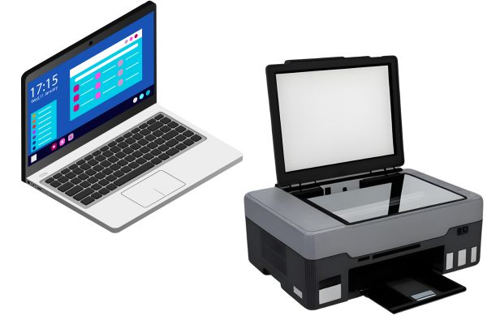
Equipamentos de informática e telefonia.
Exemplos: computadores, notebooks, impressoras e celulares.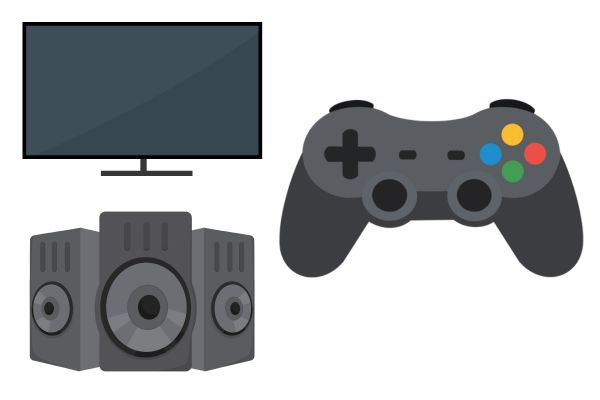
Equipamentos de áudio e vídeo.
Exemplos: televisores, aparelhos de som e videogames.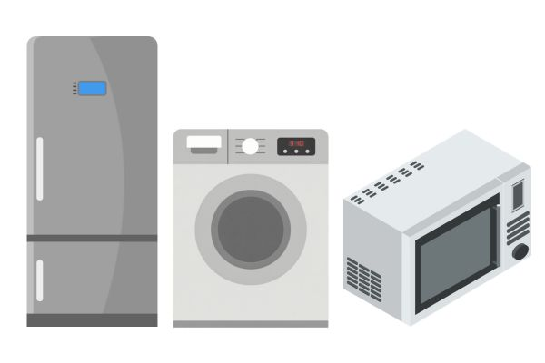
Grandes eletrodomésticos.
Exemplos: geladeiras, fogões, máquinas de lavar e micro-ondas.Quando não recebem a destinação adequada, os resíduos eletrônicos podem causar diversos problemas ambientais e à saúde.
O descarte inadequado de resíduos eletroeletrônicos representa um problema ambiental cada vez mais preocupante, especialmente diante do crescimento do consumo de aparelhos eletrônicos e da rápida substituição desses equipamentos por modelos mais novos. Celulares, computadores, televisores, baterias e outros dispositivos fazem parte do cotidiano, mas, quando deixam de ser utilizados, precisam receber uma destinação adequada para evitar danos ao meio ambiente e à saúde humana.
Isso acontece porque esses equipamentos são fabricados com diferentes materiais, incluindo metais e substâncias que podem apresentar riscos quando liberados na natureza. Entre seus componentes estão elementos como chumbo, mercúrio, cádmio e outros metais potencialmente tóxicos, que exigem cuidados específicos durante o manuseio, a coleta e o tratamento dos resíduos.
Quando o lixo eletrônico é descartado em terrenos baldios, lixões ou junto aos resíduos domésticos comuns, seus componentes podem sofrer processos de degradação, liberando substâncias que contaminam o solo e podem alcançar rios, lagos e águas subterrâneas. Além disso, a queima desses materiais libera fumaça e partículas prejudiciais à qualidade do ar, ampliando os riscos ambientais.
Os efeitos desse descarte também podem atingir diretamente a população. A exposição a determinadas substâncias tóxicas pode provocar problemas respiratórios, alterações neurológicas e outros danos à saúde, dependendo do tipo de material, da intensidade e do tempo de exposição.
Dessa forma, o descarte incorreto do lixo eletrônico não representa apenas um problema relacionado ao acúmulo de resíduos, mas uma ameaça que pode comprometer os ecossistemas, os recursos naturais e a qualidade de vida das pessoas. Por isso, compreender seus principais impactos é fundamental para reconhecer a importância do descarte responsável e da destinação adequada desses materiais.
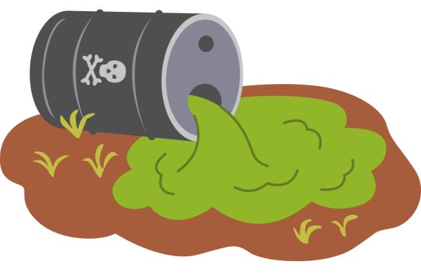
O descarte de aparelhos eletrônicos em terrenos inadequados pode liberar substâncias tóxicas presentes em seus componentes. Com o tempo, esses elementos podem se acumular no solo, prejudicar sua qualidade e comprometer o desenvolvimento da vegetação e dos organismos que vivem nele.
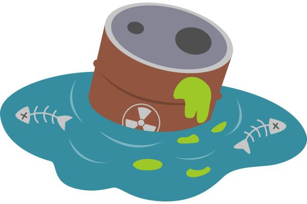
Quando os resíduos eletrônicos são abandonados na natureza, substâncias contaminantes podem ser transportadas pela chuva até rios, lagos e lençóis freáticos. Essa contaminação ameaça os organismos aquáticos, prejudica os ecossistemas e pode comprometer a qualidade da água utilizada pela população.
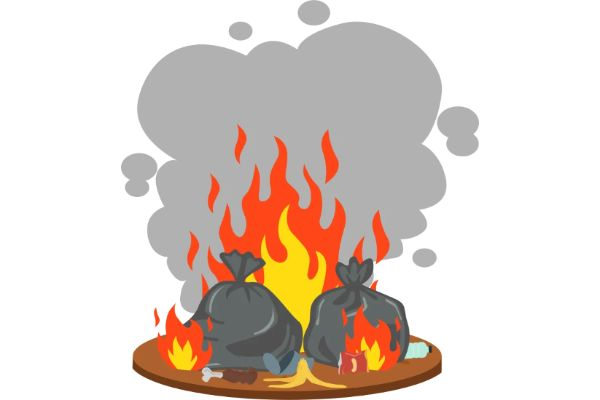
A queima inadequada de cabos, plásticos e outros componentes eletrônicos libera fumaça, gases e partículas potencialmente tóxicas na atmosfera. Essa prática contribui para a deterioração da qualidade do ar e pode provocar irritações e problemas respiratórios, principalmente em pessoas expostas diretamente à fumaça.
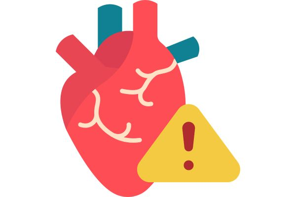
A exposição a substâncias perigosas presentes no lixo eletrônico pode afetar diferentes funções do organismo. Dependendo do contaminante e do nível de exposição, podem ocorrer danos ao sistema nervoso, aos rins e ao sistema respiratório, além de outros problemas que podem se agravar com o contato prolongado.
Entenda a dimensão do problema e conheça a realidade do descarte de resíduos eletrônicos.
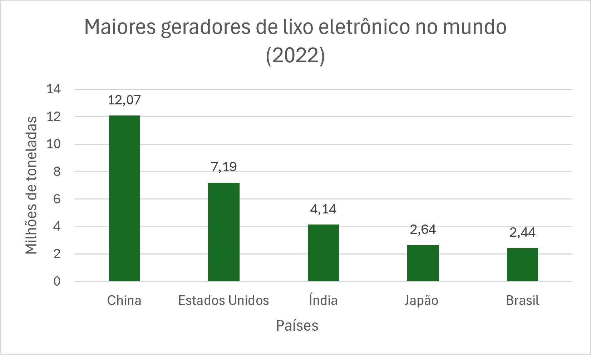
O avanço da tecnologia transformou a maneira como as pessoas trabalham, estudam e se comunicam. Celulares, computadores, televisores e eletrodomésticos estão cada vez mais presentes no cotidiano dos brasileiros. Entretanto, a facilidade de acesso a esses equipamentos e a constante renovação dos produtos também contribuem para o aumento da quantidade de resíduos eletrônicosdescartados.
Nesse cenário, o Brasil enfrenta um desafio importante: conciliar o desenvolvimento tecnológico com práticas adequadas de consumo, reutilização e destinação desses materiais.
De acordo com o Global E-waste Monitor 2024, o Brasil gerou aproximadamente 2,4 milhões de toneladas de lixo eletrônico em 2022, ocupando a quinta posição entre os países que mais produziram esse tipo de resíduo no mundo, além disso, apenas uma pequena parcela (entre 3% e 4%) desse material recebe o descarte e a reciclagem corretos. O país também é o maior gerador de lixo eletrônico da América Latina, demonstrando a dimensão do problema em seu território.
Alguns dados ajudam a compreender a dimensão da geração de resíduos eletrônicos no país.
Quantidade de resíduos eletroeletrônicos gerada pelo Brasil em 2022.
Posição ocupada pelo Brasil entre os maiores geradores de lixo eletrônico.
Média de resíduos eletrônicos gerados por pessoa no país em 2022.
Quantidade de resíduos eletrônicos recuperados pela ABREE na região Sudeste, região que mais gera lixo eletrônico
Um dos principais instrumentos previstos na legislação é a logística reversa, que estabelece mecanismos para que determinados produtos, após o uso, retornem aos fabricantes, importadores, distribuidores ou comerciantes, em vez de serem descartados de maneira inadequada.
No caso dos equipamentos eletroeletrônicos de uso doméstico, esse sistema foi regulamentado pelo Decreto nº 10.240, de 2020. A medida estabelece responsabilidades para os diferentes participantes da cadeia de comercialização e prevê a implantação de pontos de recebimento e outras estruturas para possibilitar a coleta desses materiais. Posteriormente, o Decreto nº 10.936, de 2022, regulamentou a Política Nacional de Resíduos Sólidos, reforçando as diretrizes para a gestão e a destinação dos resíduos no país.
Na prática, isso significa que o consumidor também possui um papel importante: ao deixar de utilizar um aparelho eletrônico, deve procurar pontos de coleta ou sistemas de logística reversa, permitindo que o equipamento seja encaminhado para reutilização, desmontagem ou reciclagem, conforme suas condições.
O problema do lixo eletrônico também merece atenção em Açailândia no Maranhão. Assim como acontece em outras cidades brasileiras, o crescimento do consumo de equipamentos tecnológicos traz desafios relacionados ao descarte e à destinação adequada desses materiais.
Em junho de 2025, a Prefeitura anunciou um projeto de implantação de 41 ecopontos destinados à coleta seletiva de diferentes materiais, incluindo equipamentos eletrônicos, pilhas e baterias. Mais recentemente, o município iniciou a elaboração do Plano Municipal de Gestão Integrada de Resíduos Sólidos, buscando estruturar melhor as ações de gerenciamento desses resíduos.
Conheça as práticas que ajudam a reduzir os impactos do lixo eletrônico e contribuem para um futuro mais sustentável.
A reciclagem de resíduos eletrônicos é uma etapa fundamental para reduzir os impactos ambientais causados pelo descarte inadequado desses materiais. Por meio de processos especializados, componentes e matérias-primas podem ser recuperados e reaproveitados na fabricação de novos produtos.
Entretanto, para que esse processo aconteça de maneira segura, é necessário que os equipamentos sejam encaminhados aos locais apropriados, seguindo as orientações de coleta e destinação.
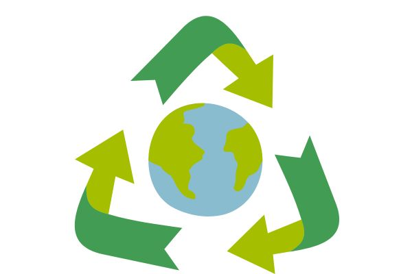
A reciclagem permite recuperar materiais como cobre, alumínio e outros metais presentes nos equipamentos, reduzindo a necessidade de extração de novos recursos naturais e contribuindo para a economia circular.
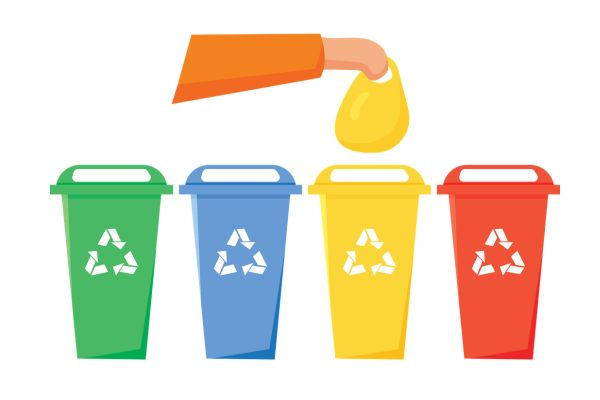
Equipamentos sem utilidade devem ser encaminhados a pontos de coleta específicos, ecopontos ou estabelecimentos que participam de sistemas de logística reversa.
Antes de descartar um aparelho, avalie se ele pode ser consertado, doado ou reaproveitado. Prolongar a vida útil dos equipamentos também ajuda a diminuir a geração de resíduos.
Encontre os pontos de coleta de lixo eletrônico disponíveis em Açailândia e faça sua parte.
Encontrar pontos de coleta